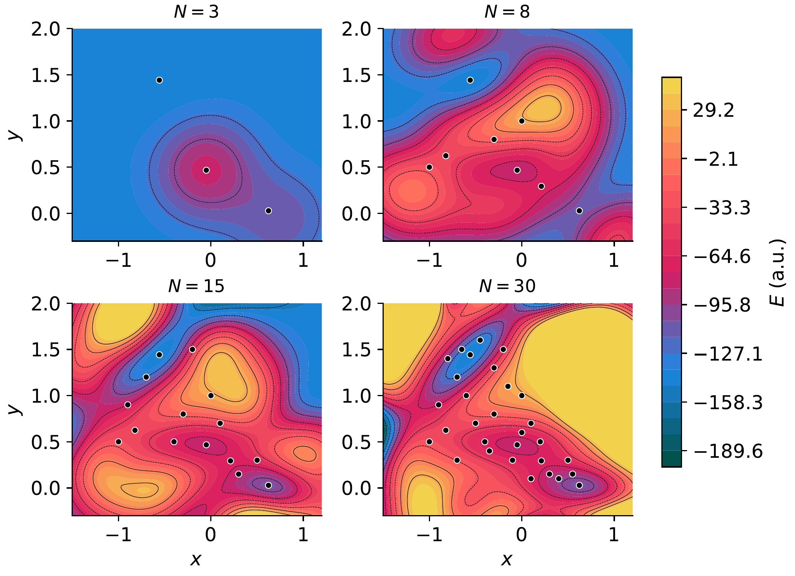
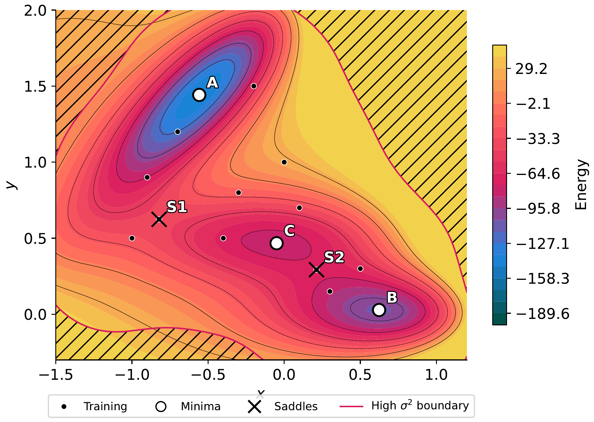

GP Basics¶
This tutorial introduces the Gaussian Process machinery underlying all ChemGP optimizers. Understanding the GP model, its kernels, and its computational costs motivates the design decisions throughout the library.
Why Gaussian Processes for PES?¶
A potential energy surface (PES) maps atomic coordinates to energies and forces. Computing this map from first principles (DFT, coupled cluster) is expensive: minutes per evaluation for molecules of practical size. An optimizer that needs 200 evaluations to converge therefore takes hours.
A Gaussian Process learns a surrogate of the PES from a small number of true evaluations. The surrogate has two properties that make it ideal for optimization:
Predictions are cheap. Once trained, the GP evaluates in microseconds. An inner optimization loop that would need 50 oracle calls can run entirely on the GP surrogate.
Uncertainty is quantified. The GP posterior provides not just a predicted energy/gradient, but also a variance. This tells the optimizer where the surrogate is reliable and where it needs more oracle data. This is the basis for trust regions and LCB exploration.
Information density: why energy+gradient matters¶
Most GPs in machine learning model a scalar function \(f(\mathbf{x})\). For PES modeling, we jointly model the energy \(E(\mathbf{x})\) and its gradient \(\mathbf{G}(\mathbf{x}) = dE/d\mathbf{x}\).
For a system with \(D\) Cartesian degrees of freedom, each oracle call returns:
1 energy value
\(D\) gradient components
That is \(1 + D\) observations per call. For a 3-atom system (\(D = 9\)), each call provides 10 observations. For a 50-atom system (\(D = 150\)), each call provides 151 observations.
This information density is why GP-accelerated methods converge in so few oracle calls: a handful of energy+gradient evaluations gives the GP enough data to build a useful surrogate. Energy-only GPs (without gradients) converge much more slowly because each call provides only 1 observation.
The price is computational: the GP covariance matrix has \(N(1+D)\) rows and columns for \(N\) training points, so Cholesky factorization costs \(\mathcal{O}(N^3(1+D)^3)\). For LEPS with 3 atoms and 30 training points, this is a 300x300 matrix (manageable). For 50 atoms and 30 points, it would be 4530x4530 (expensive). This scaling motivates FPS subset selection and RFF approximation.
Gaussian Process regression¶
Given training data \(\{(\mathbf{x}_i, E_i, \mathbf{G}_i)\}\) for \(i = 1 \ldots N\), the GP posterior at a new point \(\mathbf{x}^*\) is:
where \(K\) is the \(N(1+D) \times N(1+D)\) covariance matrix of the training data, \(\mathbf{y}\) is the vector of energies and gradients, and \(\mathbf{k}(\mathbf{x}^*, X)\) is the covariance between the test point and all training data.
The mean gives predictions; the variance gives uncertainty. Both are used by the optimizer: the mean drives the inner optimization loop, and the variance drives trust and exploration decisions.
Kernels¶
The kernel \(k(\mathbf{x}, \mathbf{y})\) defines the covariance structure. ChemGP provides two kernels
via the Kernel enum.
MolInvDistSE (molecular systems)¶
For molecules, raw Cartesian coordinates are not a good input to the kernel:
rotating or translating a molecule changes the coordinates but not the physics.
The MolInvDistSE kernel solves this by mapping coordinates to inverse
interatomic distances:
These features are invariant under rotation and translation by construction. The kernel then applies a squared exponential in feature space:
Each pair type \(p\) (H-H, H-C, C-C, etc.) has its own length scale \(\theta_p\). This lets the kernel distinguish between stretching a C-C bond (stiff, small displacement matters) and a van der Waals contact (soft, large displacement needed to change the energy).
use chemgp_core::kernel::{Kernel, MolInvDistSE};
// Isotropic: all pair types share the same length scale initially
let kernel = Kernel::MolInvDist(
MolInvDistSE::isotropic(1.0, 1.0, vec![])
);
The isotropic constructor sets uniform initial length scales. SCG training
adjusts them independently per pair type.
CartesianSE (arbitrary surfaces)¶
For non-molecular surfaces (Muller-Brown, 2D test potentials), coordinates are
the natural input. The CartesianSE kernel operates directly:
Two hyperparameters: signal variance \(\sigma^2\) (controls the output scale) and inverse length scale \(\theta\) (controls how quickly correlation decays with distance).
use chemgp_core::kernel::{Kernel, CartesianSE};
let kernel = Kernel::Cartesian(CartesianSE::new(100.0, 2.0));
Use CartesianSE only for systems where rotational invariance is meaningless.
For real molecules, always use MolInvDistSE. See Molecular Kernels for a
detailed comparison and the invariance argument.
Kernel blocks¶
For two training points, the kernel computes four blocks reflecting the joint energy+gradient model:
- \(k_{ee}\)
Energy-energy covariance (scalar). How correlated are the energies at two points?
- \(k_{ef}\) / \(k_{fe}\)
Energy-gradient cross-covariance ($D$-vectors). How does knowing the energy at one point inform the gradient at another?
- \(k_{ff}\)
Gradient-gradient covariance (\(D \times D\) matrix). How correlated are the gradient components at two points?
These blocks are arranged into the full \(N(1+D) \times N(1+D)\) covariance matrix:
where \(\nu_e\) is the energy noise variance (accounts for observation noise or oracle numerical error) and \(\nu_g\) is the gradient noise variance.
The cross-covariance blocks \(k_{ef}\) and \(k_{fe}\) are what make the joint model powerful: knowing the gradient at one point constrains the energy prediction at nearby points, and vice versa. This coupling is why gradient information is so valuable.
Training via MAP-NLL¶
Hyperparameters (\(\sigma^2\), \(\theta_p\)) are optimized by minimizing the negative log-marginal-likelihood (NLL) with a Maximum A Posteriori (MAP) prior:
The prior prevents overfitting when training data is sparse. This is the typical regime in GP-accelerated optimization: after only 5-10 oracle calls, the GP must extrapolate, and unconstrained hyperparameters can produce overconfident predictions.
The prior variance is adaptive per pair type: pair types with fewer distances (e.g., a single H atom has no H-H pair) get tighter priors to prevent their length scales from wandering.
Training uses the Scaled Conjugate Gradient (SCG) optimizer, which requires
analytical gradients of the NLL with respect to log-space hyperparameters.
Both kernel types provide these gradients via kernel_blocks_and_hypergrads.
See Hyperparameter Training for the full NLL gradient derivation and
NLL landscape visualization.
Data-dependent initialization¶
Good starting hyperparameters matter. The init_kernel function estimates
initial values from the training data:
Signal variance (\(\sigma^2\)): estimated from the range of observed energies.
Length scales (\(\theta_p\)): estimated from pairwise feature distances, scaled by
NORMINV_075(the 75th percentile of a standard normal). This follows the MATLAB GPstuff initialization strategy.
This avoids pathological starting points where the GP is either too stiff (length scales too small, every point uncorrelated) or too smooth (length scales too large, all points equally correlated).
PredModel dispatch¶
Once hyperparameters are trained, predictions can use either the exact GP or a
Random Fourier Feature (RFF) approximation. The PredModel enum dispatches
transparently:
pub enum PredModel {
Gp(GPModel),
Rff(RffModel),
}
All optimizers use build_pred_model() to construct the appropriate variant.
The key insight: hyperparameters are always trained on the exact GP (via SCG on
the FPS subset), because SCG needs exact NLL gradients. Only the prediction
model can be approximate. This means RFF inherits well-tuned hyperparameters
without the cost of exact GP prediction.
When rff_features > 0, the RFF model provides \(\mathcal{O}(D_{\mathrm{rff}})\) prediction cost instead
of \(\mathcal{O}((N(1+D))^2)\) for exact GP. For inner optimization loops that call predict
hundreds of times, this speedup is essential. See Scalability for
the theory behind FPS and RFF.
GP quality on Muller-Brown¶
The following figures demonstrate GP behavior as training data accumulates.
Run cargo run --release --example mb_gp_quality followed by
python scripts/plot_gp_quality.py to regenerate.
GP surrogate progression¶
{kind=link}

GP predicted energy surface at N = 5, 15, 21, 30 training points. White circles mark training locations. With only 5 points, the GP captures the general topology; by 21, it resolves all three minima and both saddle points.¶
Variance and uncertainty¶
{kind=link}

GP variance overlay with crosshatching. Dashed blue contours mark medium variance; solid magenta contours mark high variance. Training points (white circles) suppress local variance; regions far from training data show high uncertainty. The downward triangle marks the point of maximum variance, which is where the next oracle call would be most informative.¶
Prediction error¶

GP prediction error (predicted minus true energy) at N = 21. The diverging colormap highlights regions of over-prediction (red) and under-prediction (blue). Errors are smallest near training points and largest in under-sampled regions, as expected from the variance map above.¶
SymPy verification¶
The CartesianSE kernel block derivations (\(k_{ee}\), \(k_{ef}\), \(k_{fe}\), \(k_{ff}\)) are verified in:
python scripts/sympy/t1_cartesian_se_blocks.py
This derives all four blocks symbolically and confirms the antisymmetry \(k_{ef} = -k_{fe}\) and the diagonal/off-diagonal structure of \(k_{ff}\).
Computational cost summary¶
Operation |
Exact GP |
RFF |
|---|---|---|
Build covariance |
\(\mathcal{O}(N^2 (1+D)^2)\) |
\(\mathcal{O}(N D D_{\mathrm{rff}})\) |
Cholesky factor |
\(\mathcal{O}(N^3 (1+D)^3)\) |
\(\mathcal{O}(D_{\mathrm{rff}}^3)\) |
One prediction |
\(\mathcal{O}(N (1+D))\) |
\(\mathcal{O}(D_{\mathrm{rff}})\) |
SCG training (\(M\) iters) |
\(M \times\) Cholesky |
\(M \times\) Cholesky |
For LEPS (\(D=9\)) with 30 training points: exact GP operates on a 300x300 matrix. For a 50-atom system (\(D=150\)) with 30 points: exact GP needs a 4530x4530 matrix. RFF with 500 features: always 500x500, regardless of \(N\) or \(D\).